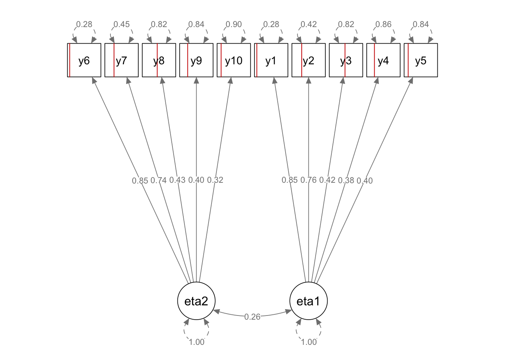
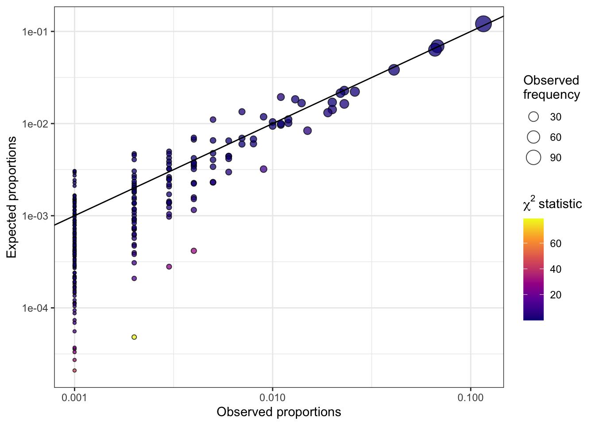

Binary categorical data, where outcomes are represented as binary indicators or responses, are ubiquitous in many fields of study, including psychology, social sciences, education, finance, marketing, and beyond. For example, in psychology, binary categorical data may arise from questionnaires or surveys assessing traits, behaviors, or psychological disorders. Similarly, in social sciences, education, finance, and marketing, binary data can be used to represent attitudes, behaviors, preferences, or other categorical outcomes.
Analyzing binary categorical data is essential for understanding the underlying structure, relationships, and patterns within the data. Statistical models are often employed as a tool for extracting meaningful information from such data. We are particularly interested in factor models, which rely on model-based probabilities to make inferences about underlying latent variables.

Assessing model fit
Assessing the goodness of fit of these models to the data can be challenging. Traditional tests, such as the Pearson chi-square test or the likelihood ratio \(G\) test, may break down when dealing with large number of items, as the number of categories (i.e. response patterns) grows exponentially, leading to sparsity issues. In particular, when conducting goodness-of-fit tests for binary factor models, low cell counts in the ensuing contingency table can result in unstable or unreliable test statistics1, leading to inaccurate assessments of model fit. We illustrate this problem of sparsity with a plot of observed vs expected response pattern probabilities, highlighting the limitations of traditional tests. The following plots are for a hypothetical situation in which \(p=10\) binary items (sample size \(n=1000\)) generated from a two-factor model are analysed using a factor model in lavaan.

Limited information tests
To address this issue, we propose a solution based on limited information tests. Limited information goodness-of-fit (LIGOF) tests are so named because they utilize a subset of information from the data to assess the goodness-of-fit of a model. For our project, we focus on lower-order marginals such as univariate and bivariate marginal positive probabilities, rather than the full contingency table of observed response patterns. This subset of information, or limited information, is then used to assess how well the model fits the observed data.
The term “limited information” reflects the fact that LIGOF tests do not rely on the full contingency table, which can become computationally challenging and statistically problematic when dealing with large numbers of categories or sparse data. By using a subset of information from the data that is less sensitive to low cell counts, LIGOF tests provide a computationally efficient and statistically robust approach for assessing the goodness-of-fit of a binary factor model.
Composite likelihood estimation
When \(p\) is large, then possibly ML methods also struggle computationally. We explore LIGOF tests under a composite likelihood estimation, which provides a computational advantage. Furthermore, the LIGOF tests can be built organically from the quantities used in the PL estimation framework. We derive the theory of the LIGOF tests, which includes a derivation of the form of the test statistics as well as their distributions.
Complex sampling
We also extend the results from independent sampling to complex sampling designs, where the estimates and test statistics are weight-adjusted. Weights are easily incorporated into the pairwise log-likelihood function, which is then optimised to obtain the weight-adjusted parameter values. The involved covariance matrix also needed to be weight-adjusted to ensure correct distributional behaviour of the test statistics.